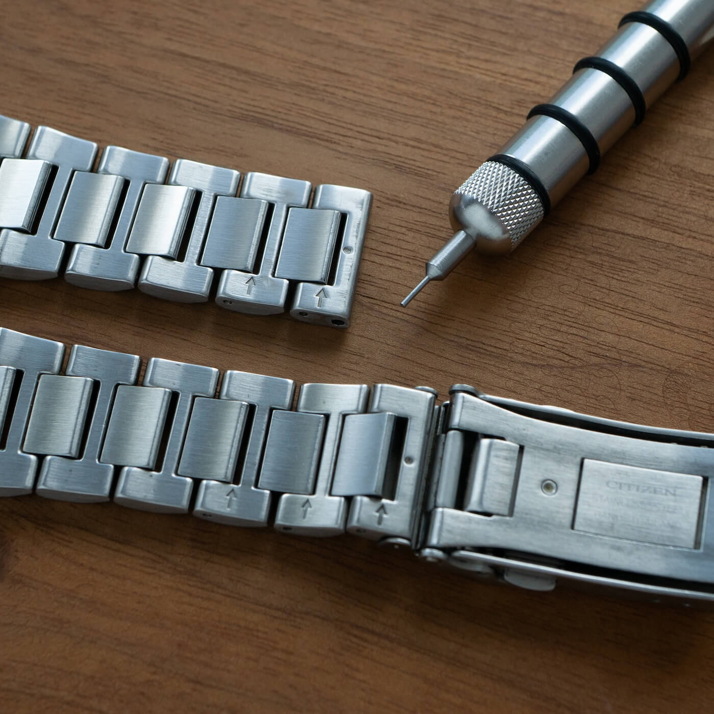
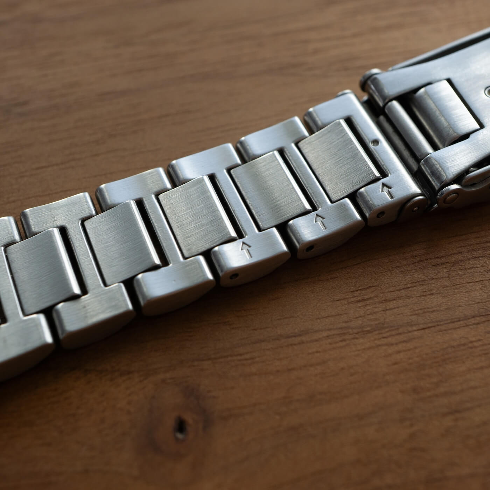
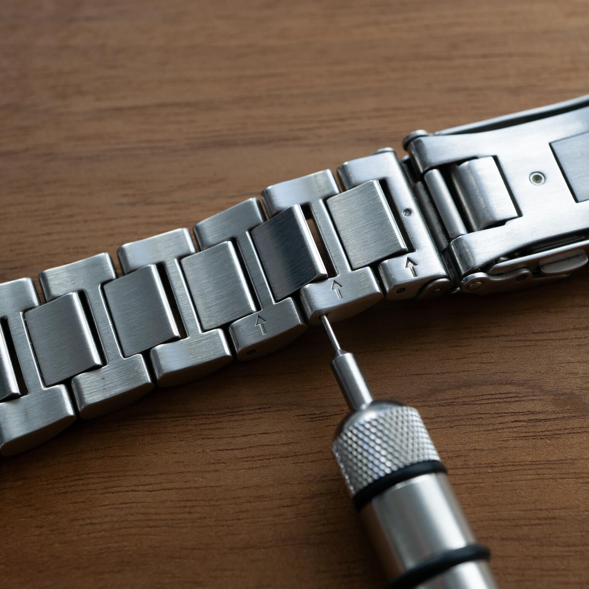

Sizing a Pin-and-Collar Bracelet
Pin-and-collar is universally considered the most frustrating bracelet system in the watch world. It is also, ironically, one of the best. Here is everything you need to know to size it without losing your mind. Or the collar (you've been warned).
 Nenad Pantelic • December 6, 2025
Nenad Pantelic • December 6, 2025

If you have ever bought a Seiko Turtle, a Citizen Nighthawk, or even some high-end Omegas, you know the drill. You sat down to size your new bracelet, expecting standard split pins (the kind that just pop out and pop back in). Instead, you pushed the pin out, and a tiny metal ring fell out with it.
You heard the faint sound of something hitting the floor, followed by a dead silence.
Congratulations. You have met the Pin-and-Collar system.
What Is It Actually and Why Brands Use It
In a standard old-school "split pin" system, the pin itself is bent or split at the end. The friction of the pin expanding against the link hole keeps it in place.
In a Pin-and-Collar system, the pin is a smooth, solid steel shaft. It has no friction on its own. It relies on a separate, tiny metal tube (the collar) that sits inside the bracelet link. The pin passes through the link, enters the collar, and is gripped tightly by the collar’s tension.
Unlike screws, which can back out over time due to vibration, a pin-and-collar system effectively never fails on its own. It is arguably the most secure way to hold a bracelet together.
The Step-by-Step Guide
Before you touch a tool, look at your floor. Is it carpet? Is it a rug with a complex pattern?
Do. Not. Size. This. Bracelet.
The "collar" is very small. If it falls onto a carpet, it belongs to the carpet gods now. You will never find it. Only size these bracelets on a clean, flat, white table, preferably with a tray or a mat underneath to catch falling parts.
Now let's describe the steps.
1. Identify the Direction
Look at the back of the links. You will see arrows. These indicate which way to push the pin out.

2. Push The Pin and Catch The Collar
Use your sizing tool to push the pin out. Go slowly.
As the pin exits, watch closely for the collar.
On some watches (like many Seikos), the collar is located in the outer link. It will fall out as soon as you push the pin out.
On other watches (like Omega), the collar lives inside the center link. It might stay stuck in there, or it might fall out when you tilt the bracelet.

3. The Reassembly (The Hard Part)
Once you’ve removed one or more links, you now need to put the bracelet back together.
- Step A: Put the links together.
- Step B: Insert the pin partially (against the arrow direction) just to hold the links in alignment.
- Step C: The Collar. You must insert the tiny collar into the hole. Use tweezers.
- Step D: Use a punch or the flat side of a tool to push the pin into the collar. You will feel resistance. That is good. That is the system working.
4. The Final Step
Finally, use a small jeweler's hammer or a strong pin-pusher tool to set the pin flush.
Pro Tip: If the pin slides in with zero resistance and falls out the other side, you lost the collar. Do not wear the watch. It will fall off your wrist.
The real struggle happens if the collar goes on the outside edge of the link, not the center. This means you have to balance the tiny collar on the tip of the link while trying to hammer the pin through from the other side.
But after a few trials and errors, you'll succeed. Congrats!
Video Tutorial
Marc from Long Island Watch created a very nice video (17:39) on this topic, covering all the essential details for sizing the pin-and-collar system. I highly recommend you give it a watch and subscribe to Marc's channel for more great watch related content.
Summary
The Pin-and-Collar system is a tank. Once sized it will outlast you. I sized the bracelet on my Citizen Nighthawk back in 2016, and haven't had any issues since.
But if you don't have good lighting, a clean desk, and a pair of quality tweezers, there is no shame in taking this one to a professional. Let them feed the carpet monster.